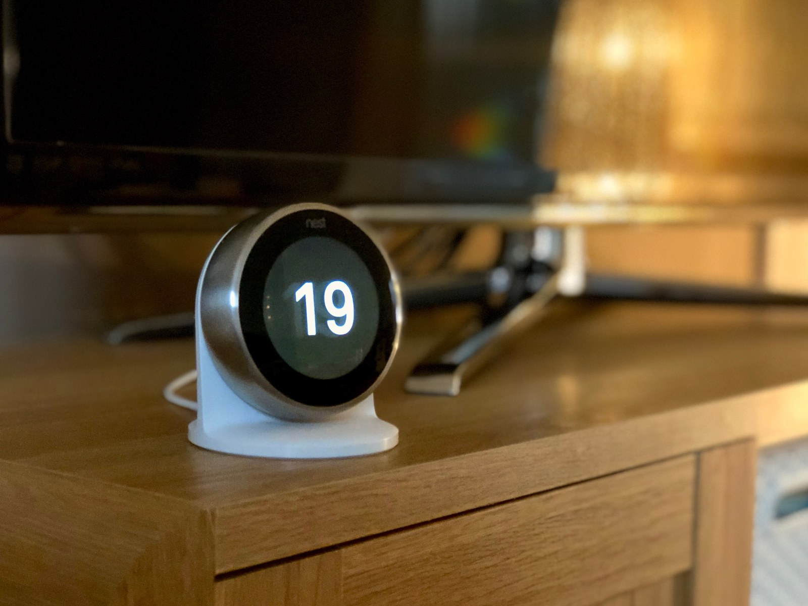

The Autopsy Report · Device #029
The Nest Thermostat, Third Generation
The stainless-steel dial that taught America a thermostat could be beautiful — bigger screen, sharper display, and a sensor that notices you from across the room. Public-records edition: we haven't opened one yet, and the silicon inside is still unverified.
What is this thing?
The third-generation Nest Learning Thermostat is a smart thermostat: a round stainless-steel dial with a high-resolution color display that replaces the beige plastic rectangle on your wall. It learns your schedule, turns itself down when nobody's home, and you control it by twisting the dial, tapping the screen, or talking to it from your phone. The 3rd gen brought a 40%-larger, sharper display and "Farsight" — it lights up with the time, temperature, or weather when it senses you walk into the room. AppleInsider
The FCC filing covers it under ID ZQAT30 (grantee: Nest Labs Inc), with test model A0013. FCC filing 9to5Google
Whose box is this?
Not ours — not yet. No unit of this device is on our bench. We haven't bought one, opened one, photographed one's insides, or listened to one boot. Everything on this page comes from public records: launch coverage, the FCC filing record, an iFixit troubleshooting wiki, and a freely-licensed stock photo credited below. When a unit lands on our bench, this report gets a second edition with our own photos, measurements, and boot log.
A short history
- 2011Nest Labs — founded by iPod veterans Tony Fadell and Matt Rogers — ships the first Learning Thermostat and makes the thermostat a design object. AppleInsider
- January 2014Google buys Nest Labs for $3.2 billion. AppleInsider
- August 2015The FCC filing for ZQAT30 surfaces, and 9to5Google correctly reads it as the incoming third-generation thermostat. 9to5Google
- September 1, 2015Nest introduces the third generation at $249: bigger and sharper display, Farsight wake-up, and a thinner profile. AppleInsider
The outside
A stainless-steel ring you twist, wrapped around a 2.08-inch 480×480 color display — the interface is the whole device. It mounts to a wall plate wired into your HVAC system, and it can also sit on the optional Nest Stand. The stock photo below shows one on its stand. AppleInsider

The board
We haven't held this board ourselves, and the public record here is thinner than we'd like. What's documented: the 3rd-gen thermostat is a round two-part assembly — the display head twists off the wall-mounted base, which carries the HVAC wiring terminals. iFixit's troubleshooting wiki covers the device at the user-serviceable level (wiring, power, Wi-Fi issues), not at the chip level. iFixit troubleshooting wiki
So we say it plainly: no chip table appears on this page. Several part numbers circulate in hardware databases for this device family, but we could not verify any of them against an exact 3rd-gen (T30) board teardown or the ZQAT30 internal photos — and older Nest teardowns describe different hardware. Naming silicon we can't source would violate the one rule that matters. The chip table goes in when a unit reaches our bench or a credible exact-model teardown surfaces.
Under the microscope: the chips
There is no chip table on this page — and that's deliberate. What the public record does establish about the 3rd-gen hardware:
- FCC ID ZQAT30, grantee Nest Labs Inc, test model A0013, grant August 20, 2015 — with internal photos among the filing attachments (filed under short-term confidentiality). FCC filing
- Wireless: Wi-Fi and Bluetooth LE radios are part of the filing's test scope — the thermostat talks to your phone and the cloud. FCC filing
- Display: 2.08-inch, 480×480 — the generation's headline hardware change. AppleInsider
Older Nest teardowns and the Thermostat E describe different boards — we don't borrow their silicon for this page. The moment exact-model evidence exists, the chip table goes in with sources attached.
The government's file on this box
The 3rd-gen thermostat's FCC filing sits under FCC ID: ZQAT30, with the grant dated August 20, 2015 — about two weeks before Nest announced the device. Internal photos are listed among the filing attachments under short-term confidentiality. FCC filing
Browse the file yourself: filing page
Listening to it boot
We haven't — there is no unit on our bench, so there is no boot log, no serial capture, nothing. That section gets written the day one arrives.
Our rule for debug ports, whenever we do meet this hardware: we listen, we don't knock. If the board exposes a serial console, we'll connect a read-only listener and record what the device volunteers about its own startup — and publish that. We won't use it to break in, dump firmware, or bypass anything. Whether this board exposes a console is currently unknown — it awaits the bench.
What we found
The most honest finding on this page is a gap. The 3rd-gen Nest Thermostat is one of the most recognizable smart-home devices ever made, yet its exact board-level silicon remains unverified in the public sources we reviewed. Teardowns of other Nest hardware exist, but they're not this board, and we don't do guilt-by-association chip lists. iFixit troubleshooting wiki
The FCC filing called the launch two weeks early. 9to5Google read the ZQAT30 filing in late August 2015 and correctly predicted the incoming thermostat — a nice reminder that the government's paperwork is often the first public draft of a product launch. 9to5Google
What we didn't do
- This device is not on our bench. We have not disassembled one.
- We captured no boot log and ran no bench tests.
- We have not touched, extracted, modified, or shared this device's firmware.
- We have not probed any debug interface on it.
- We did not borrow chip identities from older Nest teardowns or the Thermostat E — different boards, different silicon.
- The product photo above is a freely-licensed stock image, credited in its caption — not our photography.
By the numbers
- Model: Nest Learning Thermostat 3rd gen (2015)
- FCC ID: ZQAT30 (grant August 20, 2015; test model A0013)
- Display: 2.08-inch 480×480 color LCD, stainless-steel twist ring
- Signature feature: Farsight — lights up when it senses you across the room
- Launched: September 1, 2015, at $249
- Exact silicon: Unverified in public sources — awaits the bench
Words to know
Every term this page uses, in plain English. No prior knowledge required.
- Smart thermostat
- A thermostat that learns your schedule, senses when you're home, and lets you control heating and cooling from your phone.
- HVAC
- Heating, ventilation, and air conditioning — the system the thermostat controls through low-voltage wiring.
- Farsight
- Nest's name for the feature where the thermostat lights up with useful info when it senses you walk into the room.
- System on a chip (SoC)
- The whole computer — processor and friends — on one piece of silicon.
- Boot log
- The text a device prints as it starts up. Engineers read it to see what's inside without opening anything.
- UART / serial console
- A simple port that lets you watch a device narrate its own startup, line by line.
- Firmware
- The software baked into the device — the part that runs before anything else.
- FCC
- The Federal Communications Commission — the U.S. agency that regulates anything that transmits radio. Every wireless gadget sold here has to pass its tests first.
- FCC ID
- The ID the FCC assigns to each approved wireless product. The first few characters are the company's grantee code; the rest is the maker's model code. Punch it into fccid.io and the whole public filing comes up.
Sources & confidence
- Launch details (date, price, display, Farsight): contemporaneous launch coverage. High confidence.
- FCC ID, test model, grant date: the public filing record via 9to5Google's contemporaneous reporting. High confidence.
- Exact chip markings: unverified — no exact-model public source reviewed names them, so none are named here. This is the page's known gap.
- Anything not listed here is unknown until the bench says otherwise. We'll say so, out loud, when that's the case.
Public-records edition — thin sources. This device is not on our bench. No disassembly, no boot log, no bench testing, and no firmware touched, extracted, modified, or shared. The stock photo is freely licensed and credited in its caption.
Legal note. BareBoard is an educational project. Everything on this page is assembled from public records and freely-licensed photography credited in its caption. We don't publish, host, or distribute firmware, keys, passwords, or credentials. Product names and trademarks belong to their respective owners and appear here only to identify the hardware. If you believe anything here infringes your rights, contact us and we'll address it promptly.